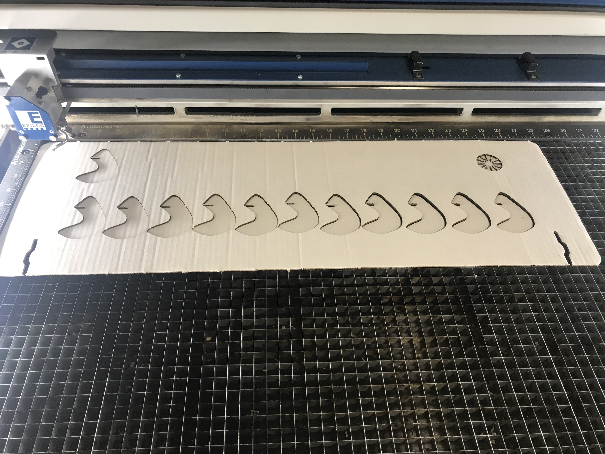

This has been a fun process.

I was inspired by this online vase design. I redesigned it based on my needs and created a vector file on illustrator. My cardboard is about 0.1112 inch, so I designed the vector shapes to have a 0.1 inch gap. The size of my cardboard is 28*19 inch. So I set my illustrator artboard and the laser cutter printing setting to 28*19 inch as well. Then I started to play around with the laser cutter at Mill:). Super fun process. After aligning the print setting to the size of my cardboard, I set the speed to 25 and power to 100. I ran a test drive and observed the movement of the red dot of the laser, and then closed the lid and begin the cutting!
